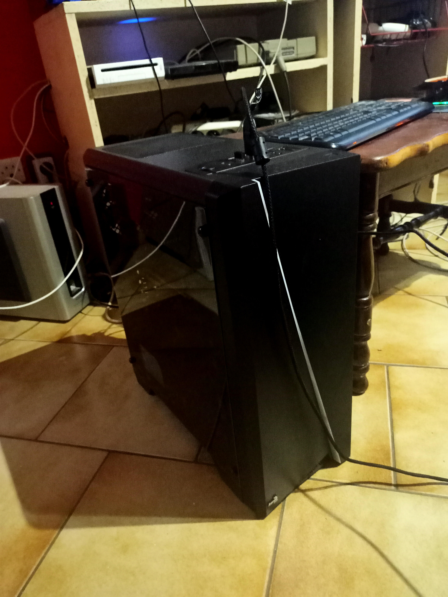

À propos de moi

Bosc Zaki
Passionné de jeux vidéo, d'informatique et de philosophie, toujours à la recherche de nouvelles expériences, je fais parfois de la musique à mes heures perdues.
mail: zaki.bosc34678@gmail.com
tel: 06 20 93 16 54
Compétences Techniques
Filmora
95%
Maintenance Informatique
75%
FL Studio 
30%